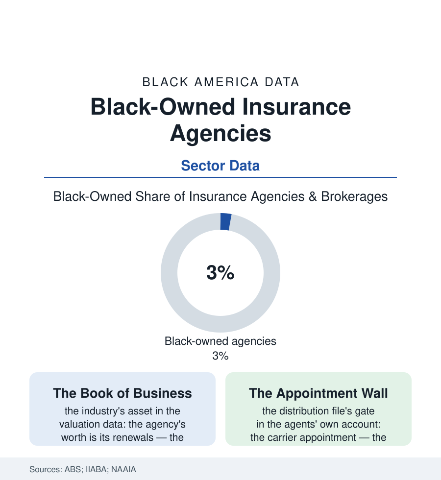

Black Business
The Agent's Office: Black-Owned Insurance Agencies
The insurance agent was the debit era's pillar and the suburb's first Black professional — and the independent agency he built is now an endangered, valuable firm. The agency file.

The census's insurance file counts the population's policies; this file counts its sellers — the independent agencies, a few percent Black-owned, whose proprietors descend professionally from the debit men who walked the routes of a century ago, and whose firms sit on one of the service economy's most quietly valuable assets: the book of renewals. This article reads the agency file.
From the Debit Route to the Corner Office
The lineage is direct in the oral histories: the Black agent begins as the era's emblematic respectable worker — the insurance man (and, in the companies' own records, the insurance woman of the debit staffs) whose route made him the neighborhood's financial counselor before the title existed, the policy in the Bible his product and the kitchen table his office. The golden-age companies' collapse and consolidation converted the company agent into the independent: the agency system in which the proprietor owns the office and sells many carriers' paper, the model that defines the modern sector — and whose gates the file must record plainly: the carrier appointment, the insurer's franchise-like permission, granted on the agency's production history and its zip code's loss ratios, the new Black agency facing the appointment file's chicken-and-egg in its purest commercial form (no appointments without a book, no book without appointments), the managing-general-agent and cluster routes in as the era's ladders. The agency's economics, once inside, are the sector's envy in the valuation data: the commission's renewal structure paying the proprietor on every policy that stays — the book compounding like the annuity it resembles, the agency's sale multiple in the acquisition market running to sums the revenue alone would not predict — agencies being bought, in the consolidation era, by the private-equity-backed aggregators at prices that have made the retiring agent's book the family's largest asset in a striking number of these files. The workforce rows show the office's social shape: the agent as the suburb's and the corridor's fixture — the Little League sponsor, the church trustee, the name on the sign that outlasts the strip mall's other tenants — the profession's civic density in Black communities out of all proportion to its 3%.
The Consolidation and the Succession
The sector's weather is the era's: the aggregators' roll-up converting independent proprietors into branch managers at the rate of hundreds of agencies a year (the exit's price excellent and the independence gone in the same signature), the direct and digital channels eating the personal-lines book the small agency was built on — the auto policy's migration to the app, the agency's defense in the commercial lines and the relationships the app cannot hold — and the industry's own demographic cliff (the average agent's age in the industry data approaching sixty, the succession file becoming the sector's largest open question). It is in the succession that this file's opportunity hides in plain sight: the retiring white proprietor's book, in town after town of this atlas, as the largest single transfer of a cash-flowing Black business asset available — the acquisition financed, in the successful cases the trade press documents, by the book's own cash flow, the buyer the young Black agent who apprenticed in the office she now owns. The associations' programs (the NAAIA's chapters, the carrier diversity councils' appointment initiatives, the agency-ownership accelerators) are aimed at exactly this hinge. The census counts the agencies in the hundreds-to-thousands under the brokerage codes; the file's meaning is in the renewals — a business whose product is other people's protection, owned at 3%, compounding quietly on every corner where the agent's sign has hung long enough to become a landmark. The debit man collected dimes toward a burial. His great-grandchildren collect renewals toward a book. The file submits that the second sentence is the first one's happy ending, still being written.
Reading the Agency Data
The agency file is the business section's quiet compounding machine: small signs, long tenures, books of other people's promises. The census counts the offices. The renewals — arriving monthly, in the policyholders' names, a decade deep — count the institution, and they do not stop. Ask the policyholders. They have been renewing the verdict for many years.
More in Black Business
Black-Owned Businesses: Counts, Receipts, and the Representation Gap
About 161,000 Black-owned employer firms and three million solo ventures: how the Census Bureau counts Black business ownership, where firms concentrate, and the gap between population share and business share.
Black Median Net Worth: The Wealth Gap in Federal Reserve Data
The Federal Reserve puts Black median family net worth at $44,900, against $285,000 for White families — about 16 cents on the dollar. The widest gap in economic data.
Black Buying Power: The $1.8 Trillion Consumer Economy
Black buying power is estimated at about $1.8 trillion — larger than the economy of most nations. What the figure measures, who produces it, and what it buys.
Source: U.S. Census Bureau Annual Business Survey; Independent Insurance Agents & Brokers of America agency data; National African American Insurance Association; LIMRA.